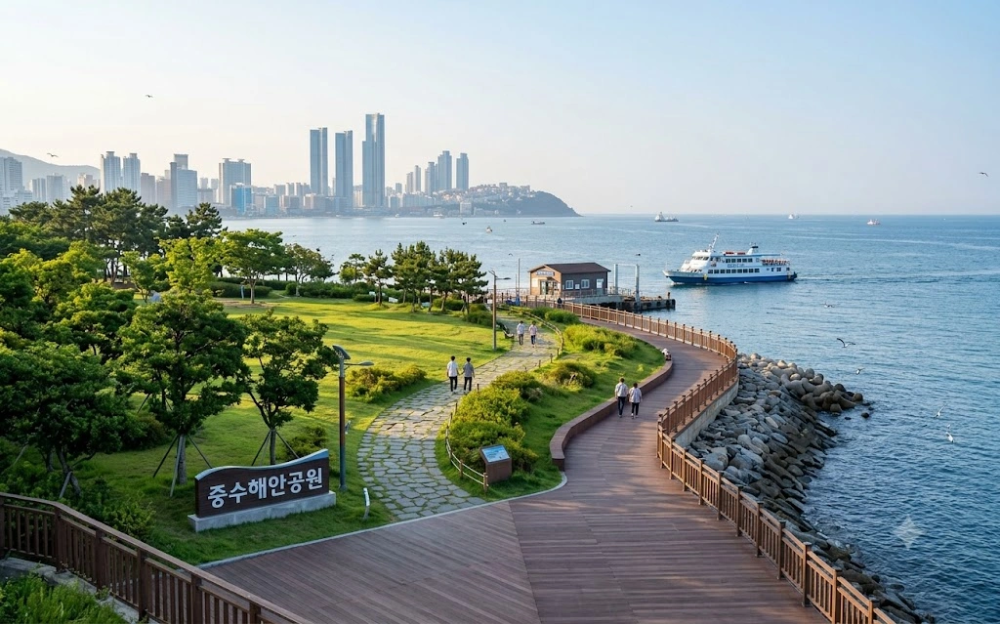

| 소재지 | 효빈광역시 북구 중수동 및 포산동 해안 일원 |
|---|---|
| 종류 | 해안공원, 수변공원 |
| 인접 시설 | 중수해안로 효빈유람선 중수포산선착장 |
| 관리 주체 | 효빈광역시 북구청 공원녹지과 |
| 연계 교통 | 6호선 포산역 도보 7분 유람선 중수포산선착장 |
효빈광역시 북구 중수동 남쪽 끝자락에서 시작해 포산동까지 해안선을 따라 길게 이어지는 대형 해안공원이다. 육지와 바다가 맞닿는 탁 트인 해안 경관을 자랑하며, 공원 중앙에 효빈유람선의 주요 기착지인 중수포산선착장을 품고 있어 관광객과 시민들이 끊이지 않는 낭만적인 핫플레이스다.
공원의 정중앙에 위치한 수상 교통의 핵심 거점이다. 효빈유람선의 핵심 노선인 Route 1 (All-in-One 통합 순환) 노선이 이곳에 정차한다. 바닷바람을 맞으며 산책을 즐기다가 시간에 맞춰 유람선에 탑승해 효빈시 앞바다를 일주할 수 있다. 배를 한 번 놓치면 다음 배가 올 때까지 하염없이 바다만 보며 멍을 때려야 하니, 매표소의 시간표를 반드시 확인하자.
중수해안로를 따라 목재 데크로 조성된 해안 산책로는 조깅과 데이트 코스로 인기가 높다. 특히 방파제 구역에는 밤마다 화려한 LED 조명이 켜지며 중수지구 특유의 세련된 야경을 바다에 반사시킨다. 근처 법조타운에서 퇴근한 판검사들과 직장인들이 캔맥주를 들고 넥타이를 푼 채 방파제를 서성이는 모습을 흔히 볼 수 있다.
공원이 위치한 중수동이 《니지가사키 학원 스쿨 아이돌 동호회》의 나카스 카스미 팬들에게 '카스밍 랜드'로 통하는 만큼, 이 해안공원 역시 예외 없이 "카스밍의 바다"로 불리며 서브컬처 성지화되었다.